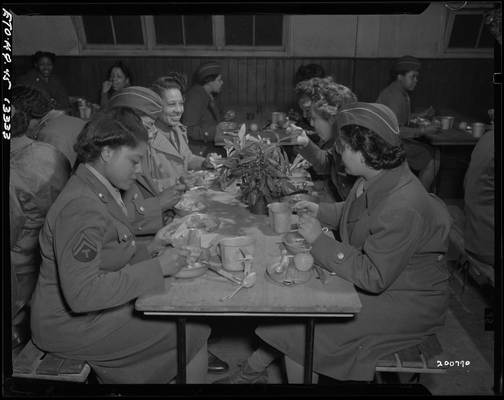
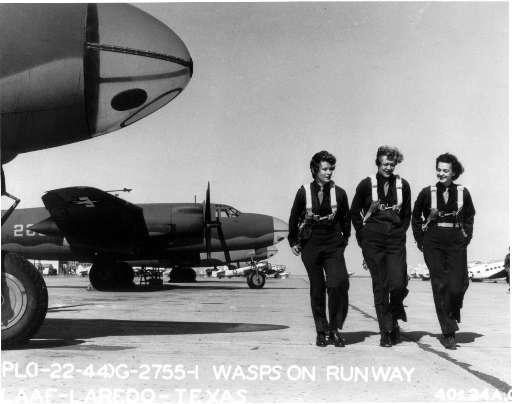
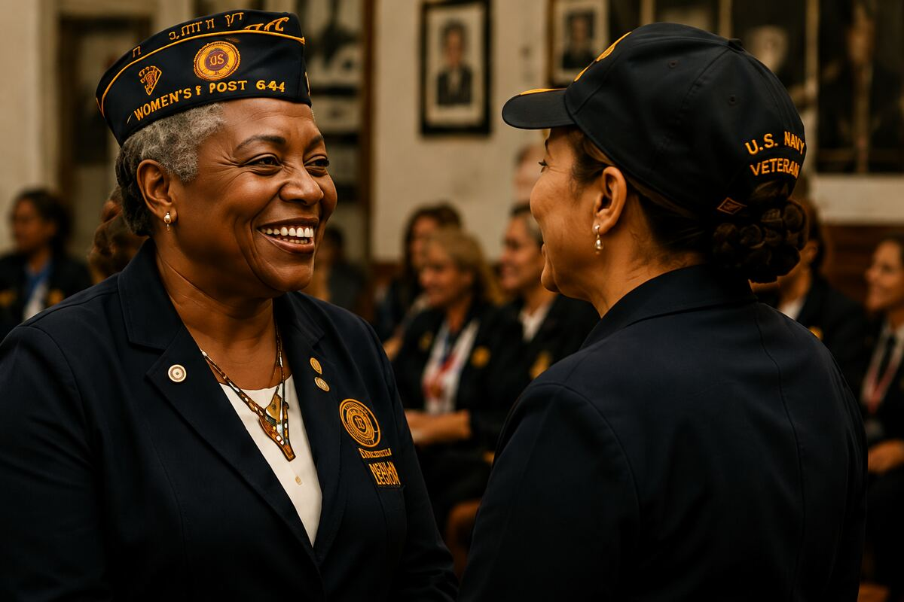

Our Story
Honoring the past.
Embracing today.
Inspiring tomorrow.
They Created a Place to Belong
In 1946, women returning from World War II did not feel accepted or understood in traditional American Legion Posts.
They knew women veterans had unique experiences and unique challenges—and they created a post where those who served could belong, be understood, and continue to serve together.
Today, we proudly honor their courage, their vision, and the unbreakable sisterhood they built.


These photographs represent the broader generation of women whose WWII service helped open doors for those who followed.
Understanding. Friendship. Continued Service.
We understand the journey because we’ve lived it. We understand the rewards, the sacrifices, and the challenges that come long after the uniform comes off.
Here, you’ll find women who listen, women who care, and women who will stand beside you—today and always.

We honor the women who came before us by ensuring every woman veteran today can find a place of understanding, friendship, and service.
Their vision became our legacy.
Their promise remains our commitment.